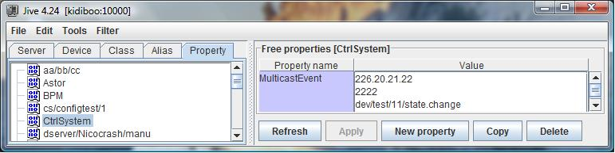
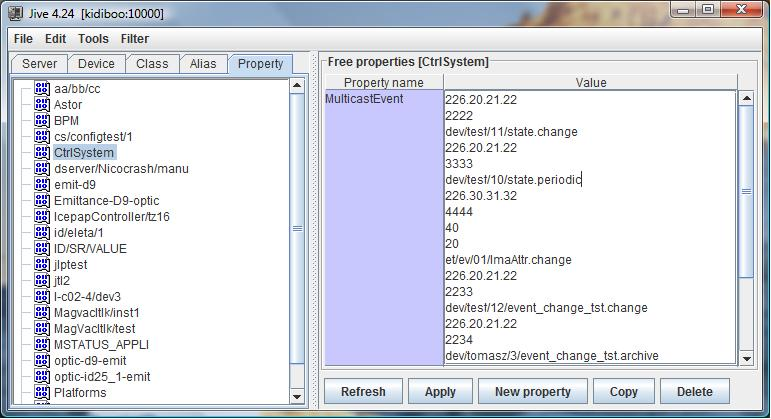

Event system¶
Using multicast protocol to transfer events¶
This feature is available starting with Tango 8.1. Transferring events using a multicast protocol means delivering the events to a group of clients simultaneously in a single transmission from the event source. Tango, through ZMQ, uses the OpenPGM multicating protocol. This is one implementation of the PGM protocol defined by the RFC 3208 (Reliable multicasting protocol). Nevertheless, the default event communication mode is unicast and propagating events via multicasting requires some specific configuration.
Configuring events to use multicast transport¶
Before using multicasting transport for event(s), you have to choose which address and port have to be used. In a IP V4 network, only a limited set of addresses are associated with multicasting. These are the IP V4 addresses between
224.0.1.0 and 238.255.255.255
Once the address is selected, you have to choose a port number. Together with the event name, these are the two minimum configuration informations which have to be provided to Tango to get multicast transport. This configuration is done using the MulticastEvent free property associated to the CtrlSystem object.

In the above window dump of the Jive tool, the change event on the state attribute of the dev/test/11 device has to be transferred using multicasting with the address 226.20.21.22 and the port number 2222. The exact definition of this CtrlSystem/MulticastEvent property for one event propagated using multicast is
1 CtrlSystem->MulticastEvent: Multicast address, 2 port number, 3 [rate in Mbit/sec], 4 [ivl in seconds], 5 event name
Rate and Ivl are optional properties. In case several events have to be transferred using multicasting, simply extend the MulicastEvent property with the configuration parameters related to the other events. There is only one MultiCastEvent property per Tango control system. The underlying multicast protocol (PGM) is rate limited. This means that it limits its network bandwidth usage to a user defined value. The optional third configuration parameter is the maximum rate (in Mbit/sec) that the protocol will use to transfert this event. Because PGM is a reliable protocol, data has to be buffered for re-transmission in case a receiver signal some lost data. The optional forth configuration parameter specify the maximum amount of time (in seconds) that a receiver can be absent for a multicast group before unrecoverable data loss will occur. Exercise care when setting large recovery interval as the data needed for recovery will be held in memory. For example, a 60 seconds (1 minute) recovery interval at a data rate of 1 Gbit/sec requires a 7 GBytes in-memory buffer. Whan any of these two optional parameters are not set, the default value (defined in next sub-chapter) are used. Here is another example of events using multicasting configuration

In this example, there are 5 events which are transmitted using multicasting:
- Event change for attribute state on device dev/test/11 which uses multicasting address 226.20.21.22 and port number 2222
- Event periodic for attribute state on device dev/test/10 which uses multicasting address 226.20.21.22 and port number 3333
- Event change for attribute ImaAttr on device et/ev/01 which uses multicasting address 226.30.31.32 and port number 4444. Note that this event uses a rate set to 40 Mbit/sec and a ivl set to 20 seconds.
- Event change for attribute event_change_tst on device dev/test/12 which uses multicasting address 226.20.21.22 and port number 2233
- Event archive for attribute event_change_tst on device dev/tomasz/3 which uses multicasting address 226.20.21.22 and port number 2234